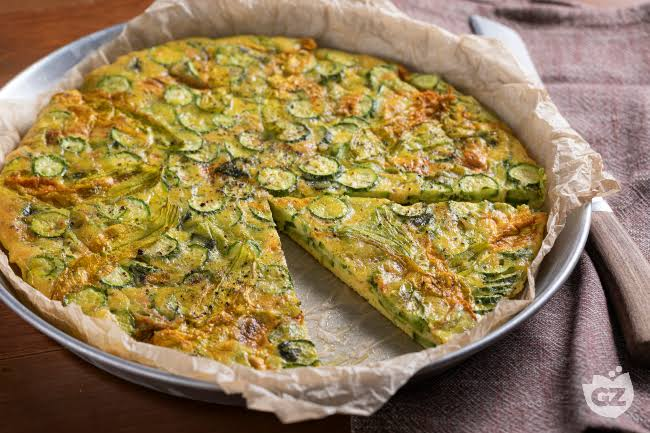

Home
Frittata di zucchine

This one's for the lazy ones, because it takes exactly 10 minutes!
It's one of those recipes you can just whip out in a rush and still leave everyone impressed.
Lessss go!
Ingridients
- 2 zucchnis
- 4-5 eggs
- Olive oil
- Parmigiano
- Garlic
Steps
- Cut your zuchini into thin circular slices
- Whisk the eggs into a big bowl and add salt and pepper
- Add the zucchini into the bowl and add 100gr of parmigiano as well
- Give everything a good mix and pour it into the pan
- Let it cook in medium heat for about 20 minutes
Enjoy!